전자기기기능사 (2010-10-03 기출문제)
1과목: 전기전자공학
1. 정류회로에서 직류전압이 100[V]이고 리플전압이 0.2[V]이었다. 이 회로의 맥동률은 몇 [%]인가?
- 0.2
- 0.3
- 0.5
- 0.8
(정답률: 66%)

2. 평활회로에서 초크입력형과 콘덴서 입력형에 대한 설명으로 옳지 않은 것은?
- 초크 입력형은 콘덴서 입력형보다 직류출력전압이 높다.
- 초크입력형은 부하전류의 변화에 따라 전압변동률이 적다.
- 콘덴서 입력형은 비교적 소전력용이다.
- 콘덴서 입력형인 경우 리플을 감소시키기 위해서는 부하저항을 크게 하여야 한다.
(정답률: 34%)
3. AM변조에서 과변조를 행하였을 때 일어나는 현상이 아닌 것은?
- 수신할 때 검파출력이 일그러져 나타난다.
- 변조도는 1보다 커진다.
- 고조파가 많이 복사되게 된다.
- 점유 주파수대폭이 좁아진다.
(정답률: 57%)
4. 그림과 같은 회로에서 VCC=6[V], VBE=0.6V[V], RB=300[kΩ]일 때 Ib는 몇 [μA]인가?
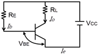
- 6
- 12
- 18
- 24
(정답률: 61%)
5. AM 변조에서 변조도가 100[%]보다 적어지면 적어질수록 반송파가 점유하는 전력은? (단, 비변조파의 전력은 일정할 때의 경우임)
- 동일하다.
- 커진다.
- 적어진다.
- 없다.
(정답률: 66%)
6. 어떤 전원의 부하를 연결했을 때 직류전압이 100[V]이고, 부하가 없을 때 직류전압이 110[V]였다면, 전압변동률은 몇[%]인가?
- 5
- 10
- 11
- 12
(정답률: 85%)
7. 다음 중 부궤환 증폭회로에 대한 설명으로 적합하지 않은 것은?
- 증폭도가 저하된다.
- 안정도가 감소한다.
- 주파수 특성이 개선된다.
- 입출력 임피던스가 궤환에 의해 변화된다.
(정답률: 56%)
8. 그림과 같은 회로의 기능은?
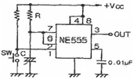
- 비안정 멀티바이브레이터
- 단안정 멀티바이브레이터
- 쌍안정 멀티바이브레이터
- 슈미트 트리거 회로
(정답률: 50%)
9. 펄스폭 Tw가 1초, 반복주기 Tr이 5초이면 반복주파수는 몇 [㎐]인가?
- 0.2
- 0.25
- 1
- 1.5
(정답률: 72%)
10. 입력전압이 500[mV]일 때 5[V]가 출력되었다면 전압증폭도는?
- 9배
- 10배
- 90배
- 100배
(정답률: 72%)
11. 수정진동자가 발진하기 위해서는 어떠한 리액턴스를 가져야 하는가?
- 유도성
- 용량성
- 지향성
- 유도성, 용량성이 교대
(정답률: 62%)
12. 다음 중 이상적인 연산증폭기의 특성에 대한 설명으로 적합하지 않은 것은?
- 입력저항이 무한대이다.
- 출력저항이 무한대이다.
- 주파수 대역폭이 무한대이다.
- 개루프 전압이득이 무한대이다.
(정답률: 72%)
13. 다음 연산증폭기의 출력 전압 VO는?
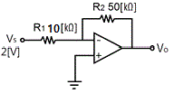
- -2[V]
- -5[V]
- -6[V]
- -10[V]
(정답률: 34%)
14. 베이스접지 증폭회로에서 컬렉터 전류 IC는? (단, IE는 이미터전류, ICO는 컬렉터 차단전류, α는 전류증폭률을 나타낸다.)
- IE＋αICO
- IE-αICO
- αIE＋ICO
- αIE-ICO
(정답률: 51%)
15. 다음 중 정류회로의 종류가 아닌 것은?
- 브리지 정류회로
- 반파 정류회로
- 전파 정류회로
- 정전압 정류회로
(정답률: 67%)
2과목: 전자계산기일반
16. A급 트랜지스터 전력증폭회로의 최대효율을 몇 [%]인가?
- 25[%]
- 50[%]
- 78.5[%]
- 100[%]
(정답률: 73%)
17. T플립플롭에 대한 설명으로 옳은 것은?
- 클록펄스가 인가되면 출력은 0이다.
- JK 플립플롭을 이용하여 구현할 수 없다.
- 클록펄스 인가 시 출력은 항상 1이다.
- 클록펄스가 인가되면 출력은 반전된다.
(정답률: 67%)
18. 기억장치에 기억된 명령이 순서대로 중앙처리장치에서 실행될 수 있도록 그 주소를 지정해주는 레지스터는?
- 프로그램 카운터(PC)
- 누산기(AC)
- 명령 레지스터(IR)
- 스택 포인터(SP)
(정답률: 66%)
19. 프로그램에 대한 설명으로 잘못된 것은?
- 컴퓨터가 이해할 수 있는 언어를 프로그래밍 언어라 한다.
- 프로그램을 작성하는 일을 프로그래밍이라 한다.
- 프로그래밍 언어에는 C, 베이직, 포토샵 등이 있다.
- 컴퓨터가 행동하도록 단계적으로 지시하는 명령문의 집합체를 프로그램이라 한다.
(정답률: 81%)
20. 문자를 삽입할 때 필요한 연산은?
- OR 연산
- ROTATE 연산
- AND 연산
- MOVE 연산
(정답률: 55%)
21. 10진수 0.9375를 8진수로 변환하면?
- (0.73)8
- (0.74)8
- (0.76)8
- (0.77)8
(정답률: 59%)
22. 순서도 기호 중에서 비교, 판단 등을 나타내는 기호는?
(정답률: 86%)
23. 간접주소지정(indirect addressing)의 설명으로 옳은 것은?
- 대상주소의 데이터가 실제 데이터가 있는 주소가 되는 방식
- 주소지정방식은 인덱스 레지스터를 사용
- 데이터를 직접 레지스터에 더하거나 가져오거나 하는 방식
- 어드레스의 번지에 따라 변동성을 가지고 있는 방식
(정답률: 59%)
24. 캐시 기억장치(cache memory)가 위치하는 곳은?
- 입력장치와 출력장치 사이
- 주기억장치와 보조기억장치 사이
- 중앙처리장치와 보조기억장치 사이
- 중앙처리장치와 주기억장치 사이
(정답률: 64%)
25. 컴퓨터의 주변장치에 해당되는 것은?
- 연산장치
- 제어장치
- 주기억장치
- 보조기억장치
(정답률: 79%)
26. 숫자나 문자 등의 키보드입력을 2진코드로 부호화하는 데 사용되는 것은?
- 인코더(encoder)
- 디코더(decoder)
- 멀티플렉서(multiplexer)
- 디멀티플렉서(demultiplexer)
(정답률: 50%)
27. 다음 진리표를 만족시키는 회로는?
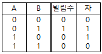
- 전가산기
- 반감산기
- XOR gate
- OR gate
(정답률: 59%)
28. 다음 논리식 중 틀린 것은?
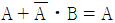
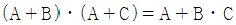
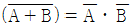
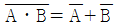
(정답률: 67%)
29. 동축케이블로 전달되는 초단파대의 전력측정에 사용되는 전력계는?
- 의사 부하법
- C-C형 전력계
- C-M형 전력계
- 볼로미터 전력계
(정답률: 52%)
30. 지침형 주파수계의 동작원리에 다른 분류에 속하지 않는 것은?
- 진동편형
- 가동철편형
- 편위형
- 전류력계형
(정답률: 46%)
3과목: 전자측정
31. 미소전류로 동작되며 일반적으로 고주파 전류측정에 많이 사용되고 있는 계기는?
- 가동철편형
- 전류력계형
- 유동형
- 열전대형
(정답률: 42%)
32. 소인(sweep) 발진기의 주용도로 옳은 것은?
- 주파수 특성측정
- 전압측정
- 전류측정
- 위상측정
(정답률: 61%)
33. 절연물의 유전체 손실각을 측정하는 데 쓰이는 브리지는?
- 헤이 브리지(Hay bridge)
- 셰링 브리지(Schering bridge)
- 맥스웰 브리지(Maxwell bridge)
- 하트숀 브리지(Hartshorn bridge)
(정답률: 73%)
34. 기준 전압이 1[V]일 때, 측정전압이 10[V]이면 몇 [dB]인가?
- 0[dB]
- 10[dB]
- 14[dB]
- 20[dB]
(정답률: 59%)
35. 증폭기의 일그러짐률 측정법이 아닌 것은?
- 필터법
- 공진브리지법
- 검류계법
- 왜율계법
(정답률: 46%)
36. 전류계의 측정범위를 확대하기 위하여 전류계와 병렬로 접속하는 저항기는?
- 배율기
- 분류기
- 분압기
- 변류기
(정답률: 61%)
37. 그림에서 a=15[mm], b=13[mm]라 하면 수직, 수평 두 전압의 위상차는?
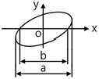
- 약 30°
- 약 45°
- 약 60°
- 약 75°
(정답률: 53%)
38. 지시계기의 구비조건으로 옳지 않은 것은?
- 확도가 낮고, 오차가 적을 것
- 응답도가 좋을 것
- 취급하기가 편리하고, 튼튼할 것
- 절연 및 내구성이 높을 것
(정답률: 68%)
39. 우연오차에 대한 설명으로 옳은 것은?
- 측정자의 버릇에 기인하는 오차
- 측정조건이 갑자기 변화하거나 측정자의 주의력에 동요되는 오차
- 계기 눈금을 잘못 읽어서 생기는 오차
- 측정값을 잘못 기록하여 생기는 오차
(정답률: 70%)
40. 시간에 따라서 직선적으로 증가하는 전압은?
- 비교 전압
- 계수 전압
- 직류 전압
- 램프 전압
(정답률: 63%)
41. 다음 중 음압의 단위는?
- [N/C]
- [μbar]
- [㎐]
- [Neper]
(정답률: 84%)
42. 그림과 같이 복합유전체를 선택가열하는 경우 온도가 높은 순서로 옳은 것은? (단, 그림은 3개의 비커를 축이 일치하도록 하여 전극판 사이에 놓고 유전가열하는 경우로서 주파수는 20[㎒]로 하며, 식염수는 0.1[%] NaCl이다.)
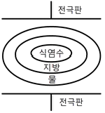
- 식염수＞지방＞물
- 물＞식염수＞지방
- 지방＞식염수＞물
- 식염수＞물＞지방
(정답률: 81%)
43. 주파수 특성의 표현법과 관계없는 것은?
- 벡터 궤적
- 나이퀴스트 선도
- 보드 선도
- 스칼라 궤적
(정답률: 60%)
44. VHS 방식 VTR 테이프의 처음과 끝부분에 자성체가 없는 투명한 폴리에스테르 필름이 있는데, 이것의 용도는 무엇인가?
- 처음과 끝부분의 육안식별
- 빛센서에 의한 종단부 검출
- 자성체 유무에 의한 종단부 검출
- 장력에 의한 자동 리와인드 및 자동정지
(정답률: 55%)
45. 수신기의 종합특성에 해당되지 않는 것은?
- 감도
- 충실도
- 선택도
- 변조도
(정답률: 63%)
4과목: 전자기기 및 음향영상기기
46. 선박이 A 무선표지국이 있는 항구에 입항하려고 할 때, 그 전파의 방향, 즉 진북에 대한 α도의 방향을 추적함으로써, A 무선표지국이 있는 항구에 직선으로 도달하는 것을 무엇이라고 하는가?
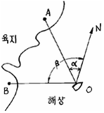
- 로란 (Loran)
- 데카 (Decca)
- 호밍 (Homing)
- 센스결정 (Sence determination)
(정답률: 77%)
47. AVC 회로에 R=3[MΩ], C=0.⑤[μF]가 사용되고 있다. R=5[MΩ]로 증가시키면 시정수는 얼마로 변하는가?
- 0.15에서 0.25초로
- 0.25에서 0.15초로
- 0.15에서 1초로
- 0.25에서 1초로
(정답률: 64%)
48. 다음 중 고주파 유전가열 장치로서 가공되는 것은?
- 금속의 용접
- 금속의 열처리
- 강철의 표면처리
- 플라스틱(Plastic)의 접착
(정답률: 62%)
49. 서보기구라 함은 다음 중 어느 자동제어 장치를 나타내는 것인가?
- 온도
- 유량이나 압력
- 위치나 각도
- 시간
(정답률: 73%)
50. 전자냉동에 대한 설명으로 가장 옳지 않은 것은?
- 온도조절이 용이하다.
- 대용량에 더욱 효율이 좋다.
- 소음이 없고 배관도 필요 없다.
- 전류방향만 바꾸어 냉각과 가열을 쉽게 변환할 수 있다.
(정답률: 67%)
51. 초음파 응용기기의 기능을 이용하는 데 알맞지 않은 곳은?
- 공기 속
- 물 속
- 기름 속
- 진공인 곳
(정답률: 69%)
52. 슈퍼헤테로다인 수신기에서 중간주파수가 455[㎑]일 때 710[㎑]의 전파를 수신하고 있다. 이때 수신될 수 있는 영상주파수는 몇 [㎑]인가?
- 910
- 1165
- 1420
- 1620
(정답률: 54%)
53. FM 수신기의 고주파 증폭에 전계효과 트랜지스터가 사용되는 주된 이유는?
- 입력 임피던스가 높기 때문에
- 증폭률이 높기 때문에
- 고주파 특성이 우수하기 때문에
- 회로 설계가 용이하기 때문에
(정답률: 47%)
54. 무선 수신기의 공중선 회로를 밀 결합했을 때 생길 수 있는 현상은?
- 발진을 일으킨다.
- 동조점이 2개 나온다.
- 내부잡음이 많아진다.
- 영상혼신이 없어진다.
(정답률: 59%)
55. 무선 표지방식에서 소형 선박을 대상으로 방향 탐색기를 설치하지 않은 소형 선박에서 라디오수신기와 같은 간단한 수신설비로서 표시전파를 수신하여 방위를 결정하는 방법은?
- 무지향성 무선 표지
- 회전식 무선 표지
- AN식 레인지 비컨
- VOR와 DME
(정답률: 53%)
56. 다음 녹음기의 녹음헤드(HEAD)의 특징이 아닌 것은?
- 투자율이 높은 합금의 박판을 사용한다.
- 공극의 형상에 따라 녹음주파수 특성이 달라진다.
- 공극의 길이는 녹음파장에 비하여 충분히 넓은 것이 요망된다.
- 특수 퍼멀로이나 페라이트 등의 자성합금을 이용한다.
(정답률: 52%)
57. 사이클링(cycling)을 일으키는 제어는?
- ON-OFF 제어
- 비례적분제어
- 적분제어
- 비례제어
(정답률: 60%)
58. 도래 전파가 8[mV]이고, 입력 회로에서 반사되는 전압이 4[mV]일 때 정재파비(SWR)는?
- 1
- 2
- 3
- 4
(정답률: 40%)
59. 다음 중 태양전지에 대한 설명으로 옳지 않은 것은?
- 축전장치가 필요하다.
- 장치가 간단하고 보수가 편하다.
- 대전력용은 부피가 크고, 가격이 비싸다.
- 빛의 방향에 따라 발생출력이 변하지 않는다.
(정답률: 66%)
60. 전자현미경의 성능을 결정하는 3요소로서 옳지 않은 것은?
- 배율
- 분해능률
- 투과도
- 빛의 세기
(정답률: 60%)
맥동률 = (0.2[V]/100[V]) x 100 = 0.2[%]
따라서 정답은 "0.2"이다. 맥동률은 리플전압이 작을수록 작아지므로, 보기에서 가장 작은 값인 "0.2"가 정답이 된다.